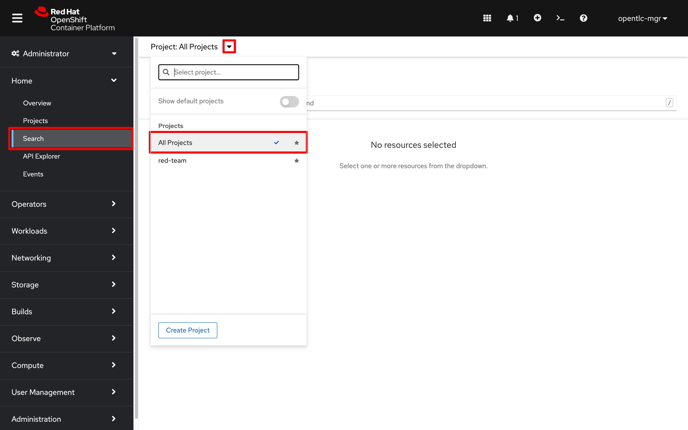
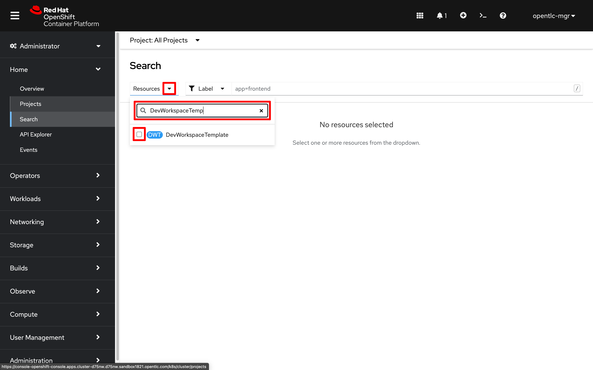
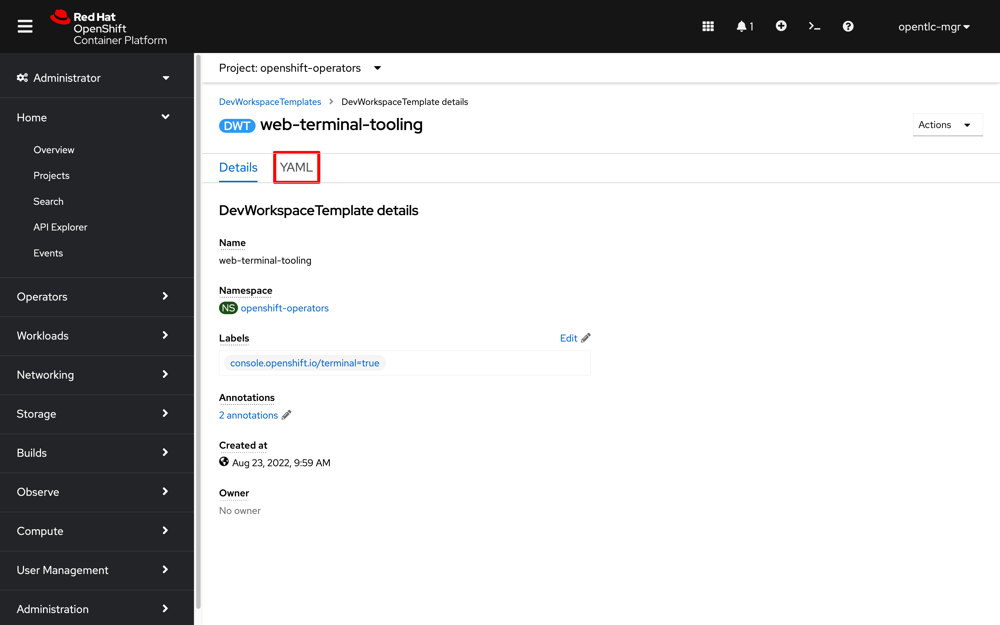

3. Cluster Customizations (RED)
3.0 User Access
Establish a shared project namespace that everyone on your team can use:
-
Use an admin account to create a new project namespace for the Red team to use:
oc new-project red-team -
Provide existing user accounts with access to the
red-teamproject namespace:for user in {1..10}; do oc adm policy add-role-to-user edit user$user ; done
3.1 Console Notifications
-
Click on the
Import(+) link in the header, then paste the following YAML:apiVersion: console.openshift.io/v1 kind: ConsoleNotification metadata: name: hackathon-banner spec: text: Welcome Red Team to the Summit Connect 2022 Hackathon! location: BannerTop link: href: 'https://github.com/redhat-scholars/quickstart-workshop/tree/master/apps/red' text: (Red Team Repo) color: '#fff' backgroundColor: darkred -
Click
Createto make the newConsoleNotificationvisible to all cluster users
3.2 Customize the Header Logo
-
Download an image that we can use for our header logo
curl https://raw.githubusercontent.com/redhat-scholars/quickstart-workshop/master/apps/red/RedShell.png -o /tmp/red-shell.png -
Upload the image into a Kubernetes configmap
oc create configmap console-custom-logo --from-file /tmp/red-shell.png -n openshift-config -
Paste the following to generate a json patch file. This file will be used to update the cluster console operator config:
cat <<EOF > /tmp/patch.yaml spec: customization: customLogoFile: key: red-shell.png name: console-custom-logo EOF -
Send the configuration patch to the console cluster operator:
oc patch consoles.operator.openshift.io cluster --type merge --patch-file /tmp/patch.yaml
{kind=link}
3.3 Customize the Login Screen
Admin access required for the section
-
Run the following command to create a template login page that you can modify:
oc adm create-login-template > login.html -
Replace the default
login.htmlpage with something more exciting: -
Store our updated login page in a
secret:oc create secret generic login-template --from-file=login.html -n openshift-config -
Generate a patch file:
cat <<EOF > /tmp/patch.yaml spec: templates: login: name: login-template EOF -
Apply the patch to the oauths resource named "cluster":
oc patch oauths cluster --type merge --patch-file /tmp/patch.yaml
3.4 Configure Web Terminal defaults
Update the cluster default terminal image by modifying the DevWorkspaceTemplate/web-terminal-tooling resource:
-
Search All Projects for resources of type
DevWorkspaceTemplate

-
Select the resource named
web-terminal-tooling
-
Click on
YAMLto modify the terminal settings
-
Add a new annotation after line 5:
web-terminal.redhat.com/unmanaged-state: "true" -
Replace the
spec.components[].container.imageurl with:quay.io/ryan_j/summitconnect:4.10.25 -
Click
Saveto set the new default terminal image for the cluster
-
Close and restart your Web Terminal
-
In a new terminal, check the version of the
occommand line tool:oc versionClient Version: 4.10.25 Server Version: 4.10.26 Kubernetes Version: v1.23.5+012e945If you don’t see an updated client release available, use the following command to refresh the outdated web terminal tooling pod:
oc delete pod -l 'controller.devfile.io/devworkspace_id'There will be a brief pause while the Web Terminal tooling container is replaced
|
Non-admin users can also quickly override the default terminal image (without setting a new cluster default) using the |